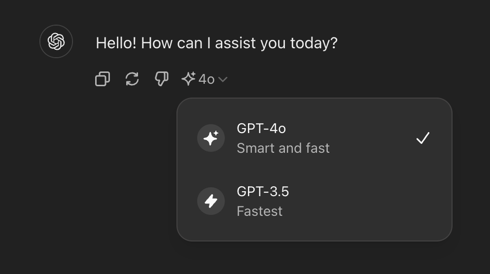

InstructAI
Simple and easy ChatGPT tutorials
Getting started using ChatGPT
- First let's start with the 4o version of ChatGPT. When using 4o, without ChatGPT premium, you have a limited amount of messages and it is noticeably slower compared to the 3.5 version of ChatGPT. However, it is much more advanced and intelligent.
- Next we have ChatGPT 3.5, the version free for everybody. ChatGPT 3.5 is also faster and has a better user experience, but is less complex and advanced. This is the version I mostly use because of it's speed and reliability, barring using 4o for advanced tasks.

- Finally, we have ChatGPT 4, the paid version of ChatGPT. It is very similar to 4o, but has a few benefits and trade offs. It can be slower, and is older, but it also is much more accurate.